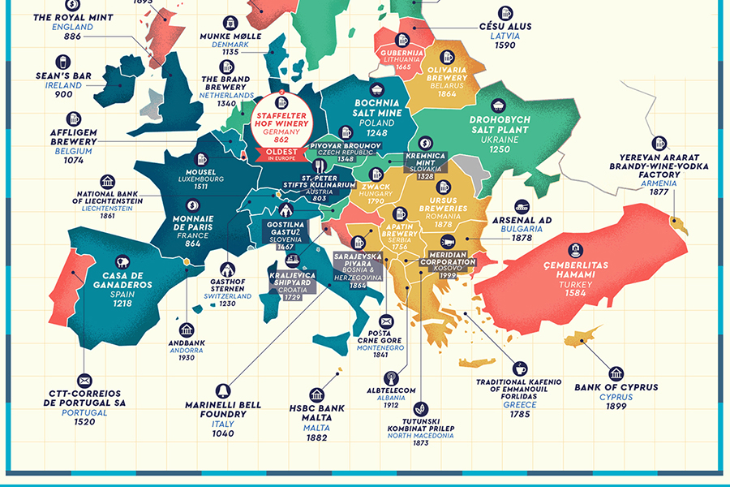

In this project we use SQL Server and develop some basic queries to explore the global Covid-19 data from Feb 2020 - Jan 2022. Then export multiple best queries into Tableau public for some basic data visualization. And finally, construct dashboard and upload it to public.

In this project, we use the housing data to make it more usable and less redundancy for furter analysis.
SQL subset also involved Data Definition Language (DDL) and Data Manipulation Language (DML).
This project is about Web scraping from 2 google scholars and compare the differences between their popular papers, frequent words they used, mutual friends and their writing style by applying all advanced R packages.

This project uses querying basic techniques in SQL to select columns from a table, filter for rows where they meet a criterion, use aggregation functions, determine the order of rows in the result, perform calculations on groups of rows, and filter grouped data.
In this project, We will be using Numpy to analyzes the Family & Household Wealth dataset (2009-2013) and we are interested in
studying if a possible relationship exists between property value and the spoken language of American households.

In this project, we will be forecasting the Covid-19 data by creating 4 different complex time series models and minimizing their root mean square error and cross-validation for the best model selection.
This project is to investigate the storms dataset for 2010 - 2015 and extract information about their differences of characteristics of each year, for example, number of unique storms in each year; number of storms per hemisphere. we will be using unix for data cleaning, data manipulation, and then use R for the visualization.